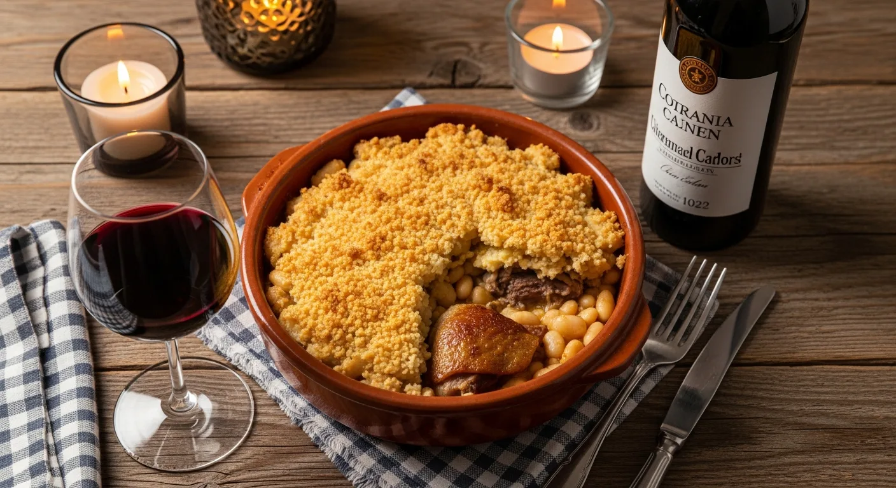

Les secrets d'un authentique cassoulet toulousain

Découvrez nos astuces et conseils pour préparer un cassoulet toulousain authentique à la maison. Nos articles vous guideront pas à pas pour réussir ce plat traditionnel.
Découvrez nos astuces et conseils pour préparer un cassoulet toulousain authentique à la maison. Nos articles vous guideront pas à pas pour réussir ce plat traditionnel.
Le cassoulet est un plat riche en saveurs, mais il nécessite une préparation minutieuse. Dans cet article, nous vous dévoilons les ingrédients essentiels et les techniques de cuisson pour obtenir un cassoulet parfait.
Lire la suite...Découvrez comment moderniser le cassoulet tout en respectant ses traditions. Nous explorons des variantes créatives qui raviront vos papilles.
Lire la suite...
Apprenez à choisir le vin parfait pour accompagner votre cassoulet. Nos recommandations vous aideront à sublimer ce plat emblématique.
Lire la suite...